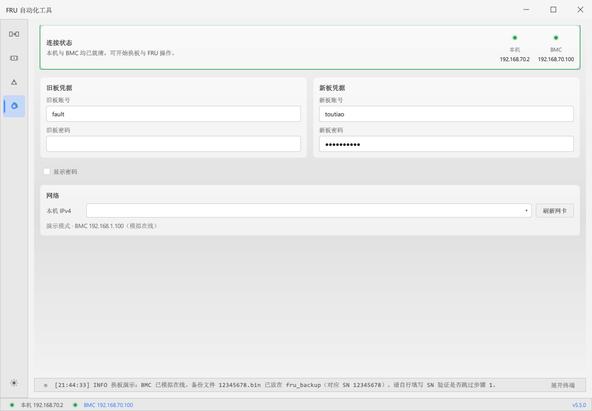
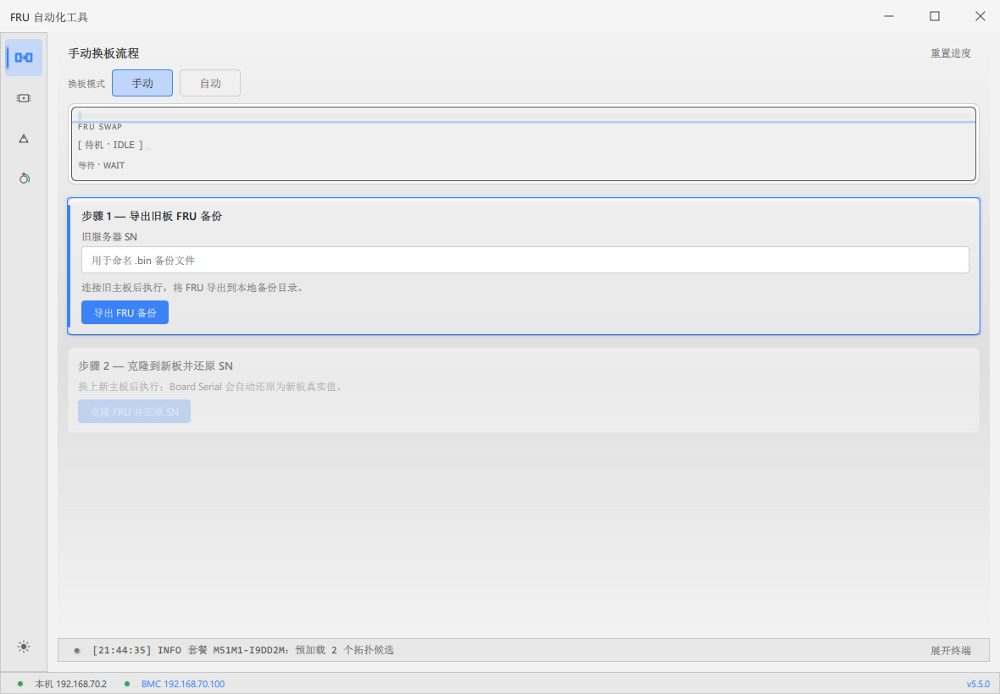
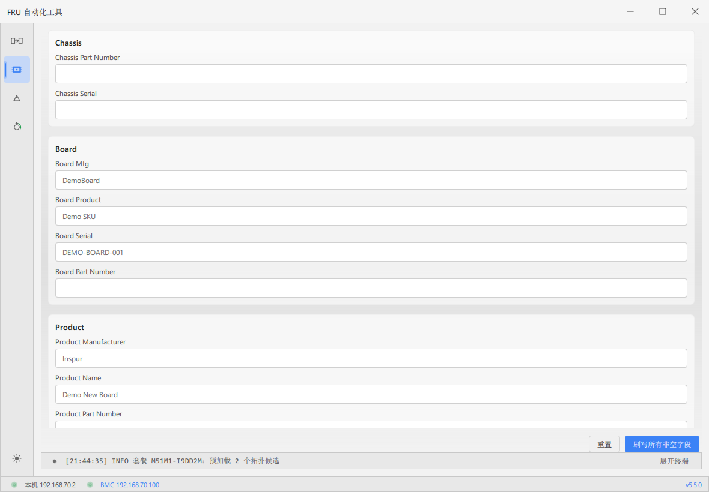
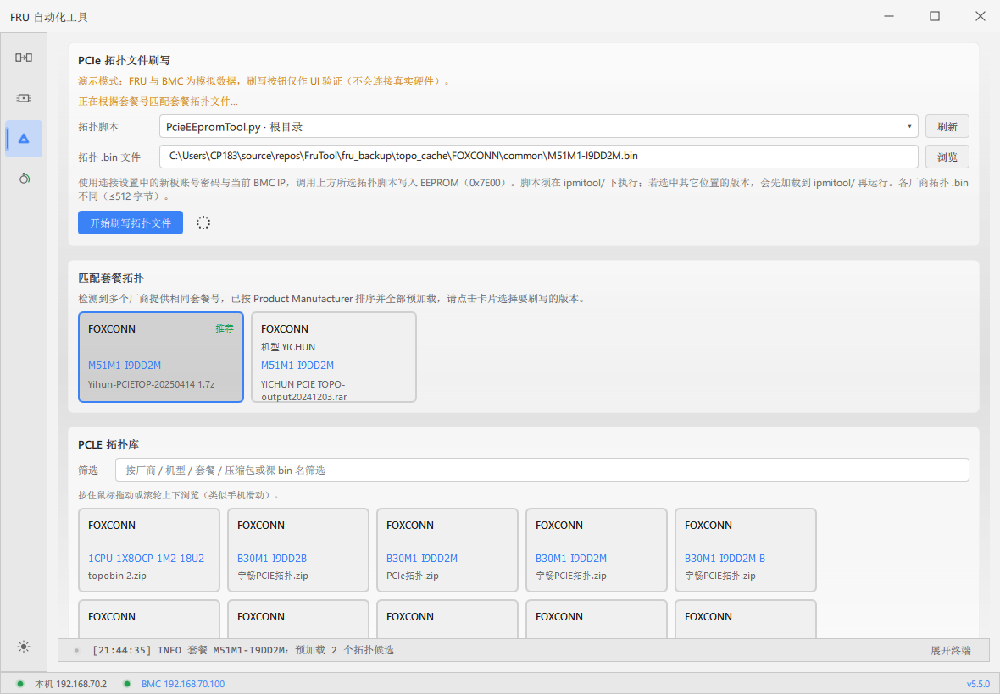

这是什么工具
FruTool 是面向现场的 多功能 BMC 运维工具。四个模块彼此独立，按任务选用，不是固定流水线。
| 模块 | 解决什么问题 | 何时用 |
|---|---|---|
| 连接与网络 | 网卡、DHCP、旧/新板账号、BMC 是否在线 | 所有写操作前的公共前提 |
| 换板流程 | 旧板 FRU 备份 → 换板 → 克隆并还原 SN | 主板更换、身份迁移 |
| FRU 字段刷写 | 按字段读写 Chassis / Board / Product | 改个别字段、核对信息 |
| PCIe 拓扑刷写 | 拓扑 .bin 写入 EEPROM（0x7E00） | 补拓扑、按机型刷拓扑 |
┌─→ 换板流程
连接就绪 ─┼─→ FRU 字段刷写
└─→ PCIe 拓扑刷写
只做拓扑、只改 FRU、只换板都可以；只要访问 BMC，就必须先完成 连接与网络。
界面怎么认
- 左侧：换板 → FRU → 拓扑 → 连接
- 底部：展开终端（全部 / DHCP / FRU / 拓扑）、本机与 BMC 状态、版本与主题
- 启动：双击整个文件夹里的
FRUTool.exe，同意管理员 UAC
第一步（唯一公共） 连接与网络
所有需要 BMC 的功能都依赖本页。配好一次后，可反复切到其它模块。

本页有什么
| 区域 | 作用 |
|---|---|
| 连接状态 | 本机、BMC 是否就绪 |
| 旧板凭据 | 旧主板账号/密码（换板读旧板常用） |
| 新板凭据 | 新主板账号/密码（拓扑与多数写操作默认用这一组） |
| 显示密码 | 核对密码是否填对 |
| 本机 IPv4 / 刷新网卡 | 选择连 BMC 的网卡 |
推荐操作
- 接好网线（直连 BMC 或同网段可达）
- 填写旧板、新板账号密码（新板一组必须正确）
- 选择网卡，必要时刷新
- 等待「本机与 BMC 均已就绪」
- 第一步结束 —— 按任务进入下面任一功能
网卡若仍是 Windows「自动获取 IP」，内置 DHCP 可能不起作用，请按机房规范配置。拓扑页使用新板账号密码 + 当前 BMC IP。
第二步（按任务三选一）
以下三个功能互不要求先后顺序。连接就绪后点左侧对应入口即可。
A · 换板主板更换、整机身份迁移
B · FRU字段级读写与核对
C · 拓扑刷 PCIe 拓扑 EEPROM
第二步 A 换板流程
功能介绍
把旧主板 FRU 身份备份下来，换上新主板后再写回去，并处理 Board Serial 等字段。
- 手动：逐步点按钮，适合可控现场
- 自动：上线后串联读 FRU → 核对 SN → 导出 → 等换板 → 克隆
- 跳过步骤 1：已有该 SN 备份时可直接克隆
- 回滚：克隆前另存新板原始 FRU，异常可恢复

备份文件（fru_backup/）
| 类型 | 文件名 | 用途 |
|---|---|---|
| 工具导出 | {SN}_时间戳.bin | 步骤 1 标准备份 |
| 手导/投放 | {SN}.bin | 同样可识别 |
| 新板原始 | {SN}_NEW_ORIGINAL_时间戳.bin | 供回滚 |
A1 手动流程
- BMC 在线 → 换板页选「手动」
- 填旧服务器 SN →「导出 FRU 备份」
- 确认
fru_backup/已有文件 - 物理换板 → 确认新板 BMC 在线
- 「克隆 FRU 并还原 SN」
- 异常时用「回滚新板原始 FRU」；重来用「重置进度」
A2 自动流程
- 切换「自动」→ 上线后读 FRU → 弹窗核对 SN
- 确认并导出（Product Serial 为空无法自动继续）
- 等旧板离线 → 新板上线 → 自动克隆
- 写入过程勿强制关程序
第二步 B FRU 字段刷写
功能介绍
针对当前在线 BMC 做字段级读写（非整包换板）：Chassis / Board / Product 分组编辑；只刷写非空字段；可重置未提交编辑。

操作流程
- 连接已就绪
- 进入 FRU 页 →「尝试读取 FRU」
- 修改需要的字段（空字段不会被刷）
- 「刷写所有非空字段」→ 看 FRU 日志
- 放弃编辑用「重置」
与换板区别：换板是「旧板整包身份 → 新板」；本页是「当前这块板的字段微调」。
第二步 C PCIe 拓扑刷写
功能介绍
将厂商拓扑二进制写入 EEPROM（偏移 0x7E00）。页面含三块：刷写区、匹配套餐拓扑、PCLE 拓扑库。支持多版本 PcieEEpromTool*.py 下拉选择并记住偏好。

操作流程
- 连接已就绪，新板密码正确
- 选择拓扑脚本；新文件放入后点「刷新」
- 准备 .bin：浏览 / 点匹配卡片 / 在 PCLE 库筛选点选
- 「开始刷写拓扑文件」→ 看拓扑日志
脚本约束：必须在
ipmitool/ 下执行。其它位置选中的版本会先加载为
ipmitool/PcieEEpromTool_run.py。.bin 通常 ≤ 512 字节。打包版需本机 Python 可用。
场景速查（连好之后）
| 现场目标 | 去做 |
|---|---|
| 只换主板、迁移 FRU 身份 | 换板流程 |
| 只改几个 FRU 字段 | FRU 字段刷写 |
| 只刷 PCIe 拓扑 | PCIe 拓扑刷写 |
| 换板后再刷拓扑 | 先换板，再拓扑（连接只需配一次） |
| 已有 {SN}.bin，只写新板 | 填 SN → 跳过步骤 1 → 克隆 |
目录（相对 exe）
| 路径 | 用途 |
|---|---|
ipmitool/ | ipmitool 与拓扑脚本 |
PCLE/ | 拓扑压缩包库 |
fru_backup/ | FRU 备份与换板会话 |
logs/ | 日志与拓扑偏好 |
常见问题
| 现象 | 处理 |
|---|---|
| BMC 离线 | 网线、网卡、账号、管理员权限 |
| 拓扑失败 | 脚本是否在 ipmitool/；.bin 大小；拓扑日志；Python |
| 找不到脚本 | 放入 ipmitool/ 后刷新 |
| 换板无备份 | 核对 SN 与 fru_backup 文件名 |
| 刷写中误关 | 可能损坏 EEPROM，尽量等完成 |